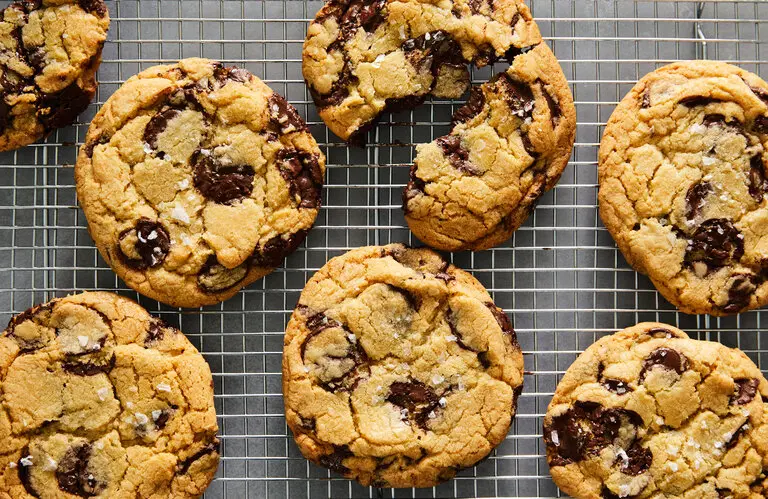

Chocolate Chip Cookies

Description
These chewy chocolate chip cookies are the pinnacle of perfection! If you want a big, fat, soft, and chewy cookie like the kind you see at bakeries and specialty shops, then this is the recipe for you!
Ingredients
- 2 cups minus 2 tablespoons cake flour (8½ ounces)
- 1⅔ cups bread flour (8½ ounces)
- 1¼ teaspoons baking soda
- 1½ teaspoons baking powder
- 1½ teaspoons coarse salt
- 1¼ cups unsalted butter (2½ sticks)
- 1¼ cups light brown sugar (10 ounces)
- 1 cup plus 2 tablespoons granulated sugar (8 ounces)
- 2 large eggs
- 2 teaspoons natural vanilla extract
- 1¼ pounds bittersweet chocolate disks or fèves, at least 60 percent cacao content (see note)
- Sea salt
Steps
- Sift flours, baking soda, baking powder and salt into a bowl. Set aside.
- Using a mixer fitted with paddle attachment, cream butter and sugars together until very light, about 5 minutes. Add eggs, one at a time, mixing well after each addition. Stir in the vanilla. Reduce speed to low, add dry ingredients and mix until just combined, 5 to 10 seconds. Drop chocolate pieces in and incorporate them without breaking them. Press plastic wrap against dough and refrigerate for 24 to 36 hours. Dough may be used in batches, and can be refrigerated for up to 72 hours.
- When ready to bake, preheat oven to 350 degrees. Line a baking sheet with parchment paper or a nonstick baking mat. Set aside.
- Scoop 6 3½-ounce mounds of dough (the size of generous golf balls) onto baking sheet, making sure to turn horizontally any chocolate pieces that are poking up; it will make for a more attractive cookie. Sprinkle lightly with sea salt and bake until golden brown but still soft, 18 to 20 minutes. Transfer sheet to a wire rack for 10 minutes, then slip cookies onto another rack to cool a bit more. Repeat with remaining dough, or reserve dough, refrigerated, for baking remaining batches the next day. Eat warm, with a big napkin.